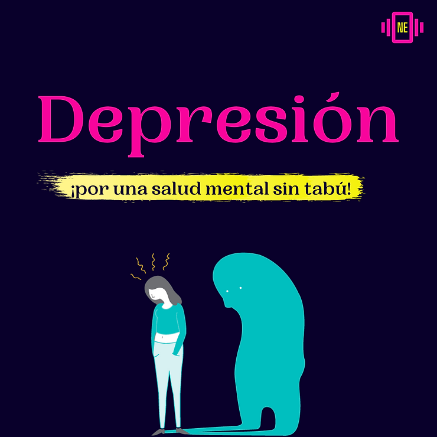

Últimas públicaciones
Ansiedad social, más allá de la timidez

Los seres humanos somos seres sociales por naturaleza, y de forma directa o indirecta,
siempre estamos en contacto con otras personas. Para muchos esto puede ser algo normal e
incluso agradable, pero para otros, relacionarse con otras personas es angustiante.
Eso sienten las personas con ansiedad social o fobia social, que es un trastorno de ansiedad
caracterizado por un temor excesivo e irracional ante la posibilidad de sentirse evaluado
negativamente por los otros en situaciones sociales. Algunos sienten un miedo intenso,
solamente ante una determinada circunstancia, como por ejemplo tocar un instrumento en
público.
Un ser molesto, irritante e intimidante

Cuántos de nosotros (por no decir todos), estuvimos frente al televisor mirando como los que
molestan a otros son los más cancheros, los líderes, los vivos y muchos estudiantes al
ingresar al colegio sueñan ser como ellos. También cómo unas chicas con ciertas
características físicas denominadas “populares”, sufrían burlas y maltratos por parte de las
hegemónicas “divinas”.
Estos estándares impuestos por la televisión tienen una influencia directa en los
adolescentes ya que los hace creer que al comportarse así, están haciendo “las cosas bien”.
Los niños cuando llegan a la adolescencia se separan de sus padres para entrar en una nueva
etapa, en la que experimentan cambios en relación a su cuerpo, a la sexualidad, a nivel
químico cerebral, se ponen más rebeldes y con la influencia de esas películas, series o
programas televisivos lo único que se logra es aumentar ese nivel de agresividad hacia los
pares.
Depresión: Por una salud mental sin tabú

“La depresión es como una amiga chiquita y dulce que te lleva cada vez más abajo, tan sutil
que pasa inadvertida, te va hundiendo poquito a poquito, hasta que un día te das cuenta que
estás al borde del abismo.
Cuando comencé a estar mal ni siquiera me daba cuenta. Todo comenzó tan sutilmente que
parecía casi imperceptible. Era como una voz suave que me decía ‘hoy no entrenes, por un día
que faltes no pasa nada’ u ‘hoy no salgas con tus amigos, la vas a pasar mejor solx’, pero
al final, eso no fue cosa de una sola vez, se convirtió en mi rutina, mi forma de vivir.